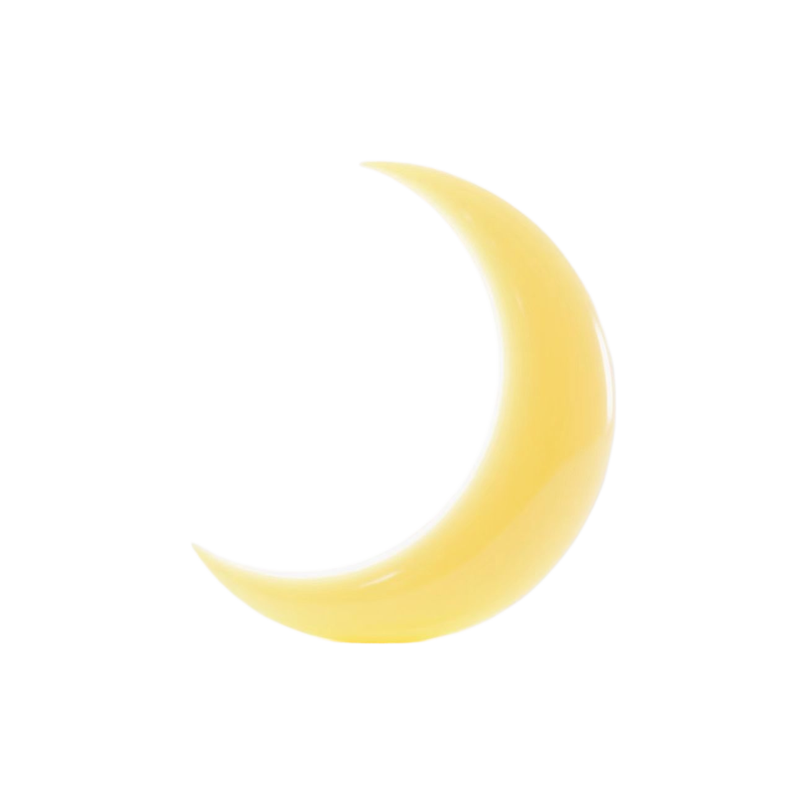

个人介绍
个人介绍
 钟爱的声音
姓名，苏祖亮，女，信息工程学院信管2301班，学号202221130125，星座水瓶座。偏爱独处、习惯在内心世界漫游的二次元少女一枚。热爱文字创作。比起喧嚣的聚会，更喜欢沉浸在文字构建的奇妙世界里，用细腻的笔触记录荒诞的思想和生活的点滴感悟，将脑海中跃动的灵感编织成故事，这是独属于我的情绪表达方式。现于晋江文学城连载一本小说。同时，我也是不折不扣的音控一枚，对声音有着天然的敏感与热爱，那些富有感染力的声线，总能轻易触动我的心弦。因此，比起电视剧，我更偏爱广播剧，比起明星，我更喜欢广播剧。没有了画面的干扰，我能更好地沉浸于由声音编织的想象空间。